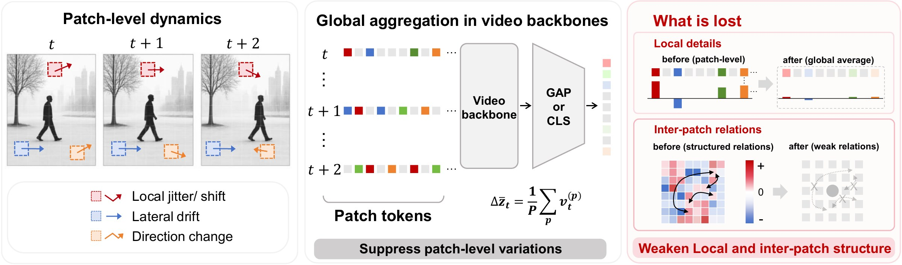
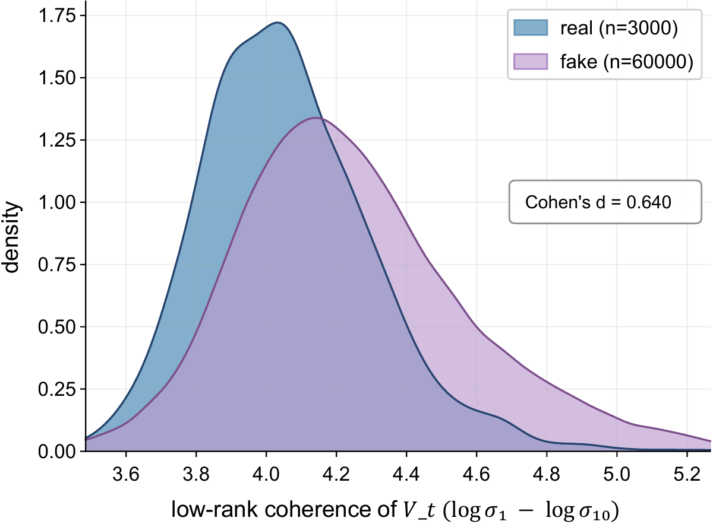
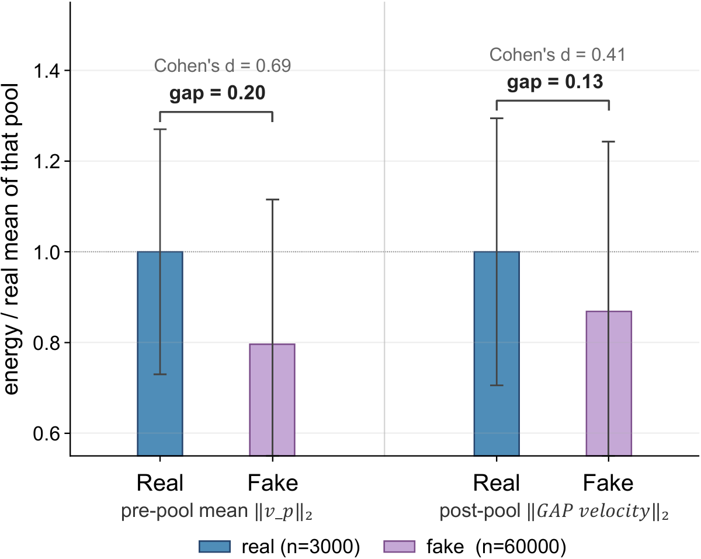
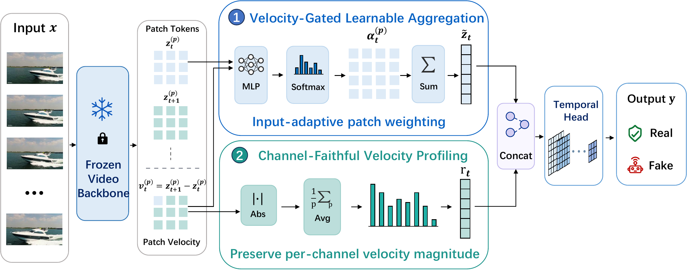
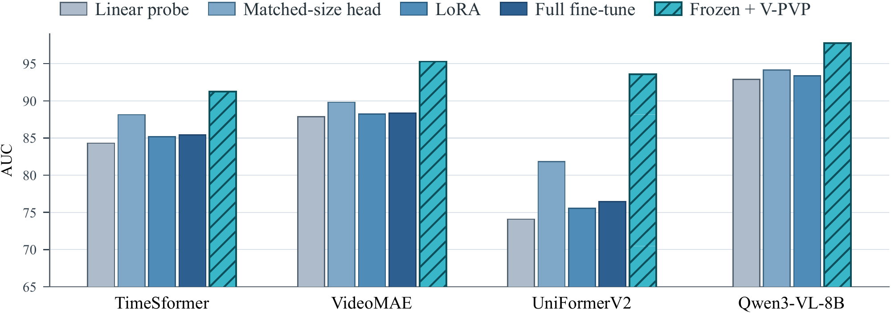

- 95.28mga AUC on AIGVDBench (20 generators) with VideoMAE kept fully frozen
- +6.94AUC over end-to-end fine-tuning of the same VideoMAE with its standard readout (~87M trainable parameters)
- 0.5Mtrainable parameters in the new readout, roughly 0.57% of the backbone
Abstract
AI-generated videos (AIGVs) typically contain subtle temporal artifacts that arise from inter-frame inconsistencies rather than within individual frames. A detector that captures such artifacts should therefore benefit from video pretrained backbones over image only ones. In practice, however, video backbones with standard global readouts often fail to outperform strong image pretrained probes on AIGV benchmarks. We attribute this gap to excessive spatiotemporal aggregation in the readout. Video pretrained backbones tend to compress each frame into a single global descriptor. This compression suppresses local patch level temporal dynamics and discards inter patch relations, which are precisely the cues that AIGV detection most reliably depends on. Based on this, we propose Velocity Gated Patch Velocity Profiling (V-PVP), a lightweight readout that replaces only the aggregation layer with two parallel streams over the patch velocity field, adding only about 0.5M trainable parameters. V-PVP serves as a general plug-and-play module that consistently improves performance across diverse video backbones under both end-to-end fine-tuning and linear probing settings. Our method reaches 95.28 AUC on AIGVDBench while keeping the backbone fully frozen. The results show that simply replacing the aggregation layer reactivates the temporal potential of frozen video backbones, restoring their advantage on AIGV detection. Code is available at https://github.com/manic-cui/Rethinking-the-readout.
Contributions
- We identify the readout as an important bottleneck of video backbones in AIGV detection, and provide quantitative evidence that standard aggregation discards two complementary forms of patch level evidence on which AIGV detection relies.
- We propose V-PVP, a readout that addresses the two losses with two parallel streams over the patch velocity field, unlocking the perceptual potential of video backbones for AIGV detection.
- Across multiple video backbones and benchmarks, V-PVP consistently surpasses same backbone readouts to a large extent. With VideoMAE as the backbone, our method reaches 95.28 AUC on AIGVDBench while keeping the backbone fully frozen.
Why do video backbones fall short?
The readout, not the backbone, is where the temporal evidence is lost.
A natural choice for exploiting temporal signals is video backbones pretrained on large scale video datasets, since they are designed to model temporal dynamics across frames. Recent benchmarks, however, suggest the opposite. Several detectors built on image pretrained encoders have been shown to surpass video backbones with their default readouts on standard AIGV detection benchmarks. This suggests that the temporal advantage of video backbones is not being fully realized, and that the bottleneck likely lies elsewhere in the pipeline.
A standard video backbone takes an input clip and outputs a tensor of patch tokens of shape P × T × D, where P is the number of spatial patches per frame, T is the temporal length, and D is the channel dimension. These tokens carry rich spatiotemporal information, but downstream classification heads expect a single fixed length vector. The readout layer is what closes this gap. Common choices, such as global average pooling, a learnable CLS token, or fixed query attention pooling, differ in how the aggregation weights are computed but share the same operation, namely a joint spatiotemporal and semantic aggregation over patch tokens.
This kind of aggregation is the right design for tasks that rely on a stable global understanding, such as action recognition, where local frame to frame fluctuations and inter patch differences are noise to be averaged out. AIGV detection has the opposite need. The discriminative signal between real and generated videos lives precisely in those small frame to frame variations within each patch and in the relations among patches. Standard readouts smooth out the former and dissolve the latter in a single step, leaving the pooled vector blind to the very cues that AIGV detection most reliably depends on. We formalize this mismatch as two complementary losses, namely the loss of inter patch relations and the dilution of per channel velocity magnitudes.
To make this concrete, we focus on GAP as the simplest case and base the analysis on the patch velocity
where z(p)t ∈ ℝD denotes the p-th patch token of frame t. Applying GAP across patches and then taking a temporal difference is equivalent to averaging the patch velocities,
The patch axis collapses from P × D to 1 × D in a single step, and an analogous collapse happens along the temporal axis. This collapse erases inter patch relations and cancels velocity components across channels, the two effects we analyze below.
Loss 1: inter patch relations are erased

Inter patch relations capture how different patches co-vary across frames. They live in the covariance structure across the patch dimension and become undefined once the patches are aggregated into a single vector. To probe whether real and generated videos differ in this structure, we measure the spectral condition number of the patch velocity matrix Vt at each frame, which tests whether inter patch motion admits a low rank decomposition, that is, whether all patches move homogeneously. As shown in Figure 2(a), generated videos consistently exhibit more homogeneous inter patch motion than real videos, reflecting their different generation processes. This pattern is a reliable cue for distinguishing real from fake, yet it lives in the patch dimension and disappears the moment GAP collapses it.
(a) Spectral condition number of the patch velocity matrix Vt ∈ ℝP×D, defined as κspec = log σ1 − log σ10. Generated videos are systematically higher, with Cohen's d ≈ 0.64. This signal is no longer measurable after aggregation.
Loss 2: per channel velocity magnitudes are diluted

Patch velocity vectors typically point in different directions across patches, so when the linear average is taken, components with opposite signs cancel along each channel. By Jensen's inequality, the post-pool magnitude is bounded by the pre-pool average,
with equality only when all v(p)t are colinear and same-signed. As shown in Figure 2(b), pooling retains only a small fraction of the per channel energy, and the gap between real and generated videos shrinks substantially after pooling. Unlike Loss 1, the magnitude pattern still exists in the pooled vector, but common readouts can no longer reliably extract it.
(b) Per channel velocity energies, normalized so that the real video mean equals 1. Pre pool, real and fake energies differ by 1.00 vs 0.80 with Cohen's d ≈ 0.69. After pooling, the gap shrinks to 1.00 vs 0.88 with d ≈ 0.41.
The two losses share the same source. The standard readout is designed for joint spatiotemporal and semantic aggregation, which by its very design erases inter patch structure and dilutes channel level magnitudes. Recovering both requires intervening at the readout rather than within the backbone.
Method: V-PVP
Keep the backbone frozen and replace only the readout with two parallel streams over the patch velocity field.
Figure 3 shows the overall design of V-PVP. We keep the backbone fully frozen and replace only the readout with two parallel streams over the patch velocity field {v(p)t}. A velocity gated learnable aggregation z̃t addresses Loss 1 by carrying inter patch heterogeneity into the pooled output, and a channel faithful velocity stream rt addresses Loss 2 by preserving per channel magnitudes through an element wise nonlinearity. The two streams are projected independently, concatenated at each time step, and passed to a shallow temporal head.

Velocity-gated learnable aggregation z̃t
Let z(p)t be the p-th patch token of frame t and v(p)t = z(p)t+1 − z(p)t the patch velocity. A small scoring network produces a per patch score on the fly, and a softmax converts scores into aggregation weights,
Standard readouts collapse the patch dimension with weights that are fixed once training ends, applying the same weighting regardless of which patches are anomalous. z̃t differs in two respects. First, the learned α(p)t can vary by orders of magnitude across patches within a single frame, whereas the uniform 1/P of GAP dilutes every patch equally. Second, α(p)t is computed from the current video's (z(p)t, ‖v(p)t‖2), so the spatial distribution of weights itself encodes inter patch heterogeneity. This weight pattern takes different shapes across videos and propagates into the channel pattern of z̃t through the weighted sum. In effect, the P-dimensional weight vector αt acts as a per video carrier of the inter patch structure that motivated Loss 1, allowing z̃t to retain a discriminative signature of this structure even after collapsing the patch axis.
The scoring network receives ‖v(p)t‖2 explicitly alongside z(p)t. Scoring on appearance alone reduces the aggregator to a semantic selector that overfits to the spatial fingerprint of the training generator (Table 3b). Conditioning on velocity magnitude anchors the definition of “anomalous” to a generator invariant physical quantity and prevents fingerprint memorization.
Channel-faithful velocity stream rt
Although z̃t addresses Loss 1 by introducing input-adaptive patch weighting, it remains a signed linear aggregation over patch-level signals. Velocity components from different patches can still cancel on each channel when they have opposite signs, so a signed linear readout cannot guarantee faithful preservation of per-channel velocity magnitudes. Loss 2 therefore requires a nonlinear operation before spatial aggregation.
The rt stream avoids this by applying an element wise absolute value before the spatial sum,
Moving the nonlinearity inside the sum prevents opposite signed components from cancelling, so per channel velocity magnitude is faithfully preserved. The resulting vector encodes both how much anomalous activity exists and which channels it occupies.
We use the mean rather than the max because channel level anomalies in generated videos typically appear as weak signals distributed across many patches. The mean accumulates these diffuse contributions and is robust to isolated noise.
Two-stream fusion and sequence head
At each frame pair, z̃t and rt each produce a D-dimensional vector with very different statistics. z̃t inherits the near zero mean signed distribution of post LayerNorm features, while rt is strictly non-negative and typically an order of magnitude smaller. A shared projection cannot rescale both. We apply two independent linear maps to H/2 each and concatenate along the channel axis at each time step,
Splitting the channel budget keeps the two signals on a common scale before fusion, and bounds the readout at the 0.5M parameter level.
A short temporal convolutional head reads {xt} into a single logit. Because ut and wt share the channel axis, every kernel position sees both signals at the same time step. A kernel size of three extends this to consecutive frame pairs, which matches the temporal scale of the inter frame inconsistencies V-PVP targets. A single anomalous transition is often not informative on its own, but a short window of them is. We then mean pool over time rather than learn a temporal attention, to avoid overfitting to the training generator's temporal position patterns.
The aggregator, the projections, and the head are trained from scratch. The backbone remains fully frozen.
Experiments
Setup
Datasets and protocol. We evaluate V-PVP on two cross-generator benchmarks. AIGVDBench contains a split spanning 20 generators across T2V, I2V, and V2V tasks. We adopt its three-generator training protocol: OpenSora, CogVideoX1.5, and EasyAnimate serve as fake training sources. GenVidBench-143k adopts a cross-source protocol in which the training sources (Pika, VideoCrafterV2, ModelScope, T2V-Zero) and the test sources (MuseV, SVD, CogVideo, Mora) are fully disjoint. The primary metric is the mean per-generator AUC. Frames are sampled and preprocessed following the AIGVDBench protocol. The default backbone is VideoMAE pretrained on Kinetics-400 and kept fully frozen, with patch tokens extracted from the pre-final-norm position of the last transformer block.
Baselines. We compare V-PVP against three families of baselines under the benchmark-specific cross-generator protocols. AI-generated image detection models classify each frame independently and aggregate by majority vote. AI-generated video detection models are designed specifically for AIGV detection and use their original temporal modeling heads. Video classification models are adapted by full-parameter fine-tuning on the same training set, so that the comparison reflects each backbone's best achievable performance. All baselines are retrained on the corresponding training split following the unified evaluation protocol of each benchmark. Each method retains its original architecture and the hyperparameters recommended by the original authors, and only the training data is replaced.
Cross-generator comparison
With the backbone fully frozen, V-PVP ranks first on both benchmarks.
Tables 1 and 2 report results on AIGVDBench and GenVidBench-143k. V-PVP reaches mga AUC of 95.28 on AIGVDBench and 93.75 on GenVidBench-143k, ranking first on both benchmarks. The backbone stays fully frozen and only about 0.5M parameters are trained.
Under the standard readout, some fully fine tuned video backbone in Table 1 sits below the best image level baseline, indicating that releasing backbone parameters alone does not unlock the temporal advantage promised by video pretraining. Our frozen backbone V-PVP exceeds end to end VideoMAE fine tuning (about 87M trainable parameters) with the standard readout by +6.94 AUC, and also surpasses the strongest image level baseline. With the backbone kept fully frozen, V-PVP simultaneously outperforms all video classification baselines, which are trained with full fine-tuning under their original readouts, as well as all image pretrained detectors, while training roughly two orders of magnitude fewer parameters. This suggests that the standard aggregation readout is an important bottleneck for video backbones in AIGV detection.
Axis starts at 50 (chance level). Hover a dot for its value; exact numbers are in Tables 1 and 2.
Table 1. Per-generator AUC (%) on the AIGVDBench open-source split (20 generators). Best average in bold, second underlined.
| I2V | T2V | V2V | |||||||||||||||||||
|---|---|---|---|---|---|---|---|---|---|---|---|---|---|---|---|---|---|---|---|---|---|
| Method | Easy Animate | LTX | Pyramid Flow | SEINE | SVD | Video Crafter | Acc Video | Animate Diff | Cogvideo x1.5 | Easy Animate | Hunyuan | IPOC | LTX | Open Sora | Pyramid Flow | Rep Video | Video Crafter | Wan 2.1 | Cogvideo x1.5 | LTX | AVG |
| AI-generated image detectors | |||||||||||||||||||||
| NPR | 96.78 | 85.76 | 99.22 | 99.21 | 99.93 | 93.97 | 68.32 | 66.10 | 93.72 | 96.23 | 74.35 | 93.82 | 92.04 | 99.99 | 99.45 | 86.50 | 98.44 | 76.72 | 96.96 | 80.50 | 89.90 |
| UnivFD | 80.18 | 82.77 | 86.83 | 94.29 | 96.39 | 80.01 | 82.74 | 93.29 | 94.77 | 90.77 | 83.27 | 97.49 | 93.30 | 99.72 | 97.23 | 90.36 | 98.03 | 84.16 | 93.47 | 81.56 | 90.03 |
| Effort | 81.88 | 82.29 | 86.96 | 92.90 | 96.02 | 79.80 | 82.39 | 93.42 | 94.82 | 92.44 | 83.85 | 97.75 | 93.28 | 99.74 | 97.71 | 92.18 | 98.33 | 85.58 | 93.54 | 80.88 | 90.29 |
| DDA | 78.28 | 90.54 | 88.79 | 99.57 | 99.99 | 99.76 | 86.02 | 92.43 | 89.82 | 75.77 | 87.34 | 97.58 | 92.15 | 98.85 | 88.78 | 82.53 | 99.74 | 89.70 | 89.93 | 87.08 | 90.73 |
| MIRROR | 55.03 | 43.59 | 30.93 | 98.05 | 93.31 | 99.86 | 69.73 | 90.45 | 51.15 | 73.20 | 67.15 | 74.45 | 45.66 | 43.27 | 49.63 | 66.62 | 99.87 | 70.06 | 54.63 | 54.76 | 66.57 |
| AI-generated video detectors | |||||||||||||||||||||
| DeMamba | 98.50 | 96.25 | 98.75 | 99.25 | 97.50 | 95.50 | 66.50 | 85.25 | 95.75 | 98.50 | 73.00 | 96.25 | 97.00 | 98.25 | 97.75 | 90.50 | 95.75 | 88.75 | 98.50 | 95.25 | 93.14 |
| DeCoF | 90.84 | 90.55 | 95.54 | 97.33 | 98.98 | 63.10 | 88.25 | 89.24 | 98.16 | 91.87 | 86.33 | 99.33 | 97.61 | 99.76 | 99.76 | 97.22 | 89.25 | 83.53 | 97.40 | 89.86 | 92.20 |
| ReSTrav | 60.17 | 68.40 | 64.52 | 55.02 | 54.97 | 73.73 | 80.25 | 88.00 | 61.57 | 66.13 | 79.32 | 68.67 | 60.82 | 79.60 | 67.65 | 63.85 | 80.38 | 60.98 | 78.88 | 72.55 | 69.27 |
| NSG-VD | 50.49 | 54.79 | 52.87 | 52.58 | 50.66 | 53.91 | 57.23 | 51.98 | 52.24 | 50.02 | 48.24 | 52.26 | 54.06 | 62.62 | 51.43 | 52.03 | 47.04 | 48.12 | 54.44 | 53.97 | 52.55 |
| Video classification models | |||||||||||||||||||||
| I3D | 95.10 | 91.51 | 90.11 | 84.35 | 90.65 | 90.75 | 96.06 | 95.10 | 91.81 | 97.14 | 95.78 | 93.61 | 94.08 | 99.65 | 95.49 | 87.93 | 98.48 | 84.59 | 96.24 | 88.51 | 92.85 |
| SlowFast | 93.47 | 94.45 | 95.42 | 94.41 | 98.60 | 91.50 | 91.11 | 88.24 | 93.27 | 96.53 | 91.59 | 91.97 | 97.71 | 97.64 | 96.71 | 88.18 | 97.24 | 73.08 | 91.34 | 91.61 | 92.70 |
| TimeSformer | 78.86 | 78.38 | 80.94 | 77.16 | 84.74 | 84.26 | 87.15 | 91.60 | 87.16 | 89.31 | 86.77 | 88.38 | 85.84 | 96.57 | 91.03 | 80.82 | 94.77 | 78.33 | 88.01 | 78.20 | 85.41 |
| UniFormerV2 | 76.92 | 68.96 | 74.77 | 73.47 | 76.82 | 67.75 | 71.21 | 73.98 | 75.76 | 81.35 | 72.37 | 80.81 | 73.22 | 95.34 | 86.86 | 74.75 | 84.27 | 78.87 | 73.92 | 67.77 | 76.46 |
| VideoMAE | 84.21 | 84.15 | 87.11 | 92.81 | 88.24 | 94.52 | 91.64 | 94.28 | 81.67 | 88.04 | 88.82 | 87.11 | 86.78 | 98.74 | 93.13 | 80.93 | 97.62 | 76.86 | 87.76 | 82.45 | 88.34 |
| V-PVP (Ours) | 94.18 | 94.05 | 94.68 | 97.48 | 94.53 | 97.19 | 97.75 | 96.84 | 93.82 | 94.82 | 95.90 | 96.11 | 95.82 | 99.69 | 96.40 | 90.17 | 99.02 | 87.67 | 97.45 | 91.96 | 95.28 |
Table 2. Per-generator AUC (%) on GenVidBench-143k (cross-source protocol). Best average in bold, second underlined.
| Method | MuseV | SVD | CogVideo | Mora | AVG |
|---|---|---|---|---|---|
| AI-generated image detectors | |||||
| NPR | 48.87 | 30.03 | 91.27 | 30.89 | 50.26 |
| UnivFD | 65.79 | 55.37 | 97.40 | 96.46 | 78.76 |
| Effort | 65.85 | 55.51 | 97.88 | 97.08 | 79.08 |
| DDA | 91.72 | 87.40 | 96.92 | 95.12 | 92.79 |
| MIRROR | 77.29 | 74.59 | 59.93 | 91.42 | 75.81 |
| AI-generated video detectors | |||||
| DeMamba | 88.46 | 73.05 | 98.80 | 99.80 | 90.03 |
| DeCoF | 57.51 | 52.44 | 93.55 | 89.72 | 73.30 |
| ReSTrav | 86.04 | 82.12 | 96.97 | 95.99 | 90.28 |
| NSG-VD | 78.26 | 63.99 | 72.83 | 61.80 | 69.22 |
| Video classification models | |||||
| I3D | 91.91 | 87.17 | 94.85 | 97.12 | 92.76 |
| SlowFast | 89.85 | 85.24 | 98.64 | 98.06 | 92.95 |
| TimeSformer | 89.06 | 85.92 | 91.72 | 98.00 | 91.18 |
| UniFormerV2 | 66.66 | 64.42 | 59.63 | 88.78 | 69.87 |
| VideoMAE | 82.14 | 81.78 | 94.55 | 95.89 | 88.59 |
| V-PVP (Ours) | 90.27 | 88.63 | 97.79 | 98.30 | 93.75 |
Generality across backbones and adaptation schemes
V-PVP is best on every backbone, and its gains grow as the backbone is adapted.
To test whether the bottleneck is the readout rather than the representation, we port V-PVP to several frozen video backbones and compare against the standard readout and adaptation alternatives.
We cover four ViT-based encoders with diverse pretraining objectives: TimeSformer, VideoMAE, UniFormerV2, and the multimodal large model Qwen3-VL-8B. On every backbone we compare two groups of methods. The first keeps the backbone frozen and only trains a head, including a linear probe, a matched-size head, and our V-PVP. The second updates backbone parameters, including LoRA fine-tuning with rank 8 and full fine-tuning. Full fine-tuning is omitted on Qwen3-VL-8B due to its ~8B parameter scale.

Figure 4 reports mga AUC on the AIGVDBench open-source split. V-PVP achieves the highest AUC on every backbone, surpassing all readout and adaptation alternatives while training roughly two orders of magnitude fewer parameters than full fine-tuning. The advantage holds across all four pretraining objectives, which supports the readout-bottleneck hypothesis: the bulk of the fine-tuning gain comes from adjusting how patch tokens are aggregated, not from modifying the representation itself. We also note that backbone tuning does not always help. On UniFormerV2, both LoRA and full fine-tuning stay below 80, lower than the matched-size head with the backbone frozen. This suggests that updating backbone parameters can amplify overfitting to the training generator's spatial fingerprint rather than help. V-PVP avoids this failure mode by anchoring the readout to a generator-invariant quantity and reaches 93.56 on the same backbone.
A natural follow-up question is whether the gains of V-PVP depend on a frozen backbone. We test this on VideoMAE by pairing V-PVP with LoRA at rank 8 and with full fine-tuning, and compare against the same adaptation schemes under the standard readout. Table 4 reports mga AUC on AIGVDBench. The standard-readout column is nearly flat across adaptation regimes, indicating that backbone capacity has little outlet once patch tokens are collapsed by joint spatiotemporal pooling. V-PVP responds in the opposite way and improves over the standard readout under every adaptation scheme, with the largest margin reaching 8.9 points under full fine-tuning. Even the frozen configuration with V-PVP, at roughly 0.5M trainable parameters, surpasses full fine-tuning under the standard readout at roughly 87M parameters. The right axis along which to invest capacity is therefore the readout rather than the backbone.
Table 4. V-PVP composes with backbone adaptation. mga AUC on AIGVDBench with VideoMAE under three adaptation schemes. V-PVP improves over the standard readout under every scheme; the frozen V-PVP configuration already exceeds full fine-tuning under the standard readout at a fraction of the parameter cost.
| Adaptation | Trainable params | Standard readout | V-PVP | Δ |
|---|---|---|---|---|
| Frozen | ~0.5 M | 89.82 | 95.28 | +5.5 |
| LoRA (r = 8) | ~1 M | 88.22 | 95.06 | +6.8 |
| Full fine-tune | ~87 M | 88.34 | 97.21 | +8.9 |
Ablation study
Both streams and the velocity prior are needed; heads without the prior overfit.
We ablate V-PVP along two axes. The first looks inside V-PVP and asks how much each stream and the velocity gating contribute. The second looks outside and asks whether other readouts that drop the velocity prior can reach the same accuracy. All ablation runs use the frozen VideoMAE-K400 backbone with head-only training. All ablation rows including V-PVP use a fixed 5-epoch budget for fair comparison. Results are reported as mean AUC ± standard deviation over four random seeds.
Per-stream contribution
Table 3a dissects V-PVP into its two streams. Going from r-only (MLPMean, 79.10) to z̄ + r adds +11.13, most of which comes from the semantic information carried by the GAP pathway. Replacing z̄ with the velocity-gated z̃ adds another +4.11 on top of an already channel-faithful stream. The middle two rows show that both components are needed: removing the r stream drops AUC by 1.27, and removing the velocity input from the scoring network drops it by 2.26.
Alternative patch-level readouts
A natural question is whether a free-form head that keeps the patch dimension but drops the velocity prior could match V-PVP. Convolutional heads (Conv2D, Conv3D) and a spatial-attention head are applied to the per-patch energy map E(p)t = ‖v(p)t‖2, and a PatchMLP consumes the raw patch tokens directly as the most expressive alternative. Heads with more capacity to use the spatial dimension fit the training set more aggressively but generalise worse: PatchMLP and Conv2D reach near-perfect train AUC, yet their test mga AUC stays well below V-PVP. Without an explicit prior, the spatial pattern that supervision finds is generator-specific and does not transfer. V-PVP avoids this by anchoring patch selection to the generator-invariant quantity ‖v(p)t‖2, outperforming Conv2D by 25.73 points (94.34 vs. 68.61).
Conclusion
We identify the readout layer as the principal bottleneck that prevents video pretrained backbones from realizing their temporal advantage on AIGV detection. The standard CLS or GAP aggregator performs a joint spatiotemporal and semantic collapse over patch tokens, which erases inter patch relations and dilutes per channel velocity magnitudes. Both losses remove the cues that AIGV detection most reliably depends on.
Building on this diagnosis, we propose V-PVP, a lightweight readout that keeps the backbone fully frozen and replaces only the aggregation layer with two parallel streams over the patch velocity field. The velocity gated aggregation z̃t conditions patch attention on ‖v(p)t‖2 to carry inter patch heterogeneity into the pooled output, and the channel faithful stream rt preserves per channel magnitudes through an element wise nonlinearity. V-PVP adds only about 0.5M trainable parameters. Across multiple ViT based video backbones and two cross generator benchmarks, V-PVP consistently surpasses same backbone readouts and exceeds end to end fine tuning with the standard readout. With VideoMAE on AIGVDBench, our method reaches 95.28 mga AUC while keeping the backbone fully frozen, and even outperforms full fine tuning under the standard readout. These results indicate that for AIGV detection, the right axis to invest capacity is the readout rather than the backbone.
Limitations
V-PVP has several known limitations. First, generators that deliberately mimic real video statistics, for example by injecting inter frame jitter or preserving high frequency spatial detail, can shrink the inter patch separability of ‖v(p)t‖2 and drive velocity gating toward uniform attention. Second, very short clips with T < 4 leave too few temporal samples of patch velocity and increase the variance of z̃t and rt. Third, when the backbone has not been pretrained on a distribution close to the target domain, the frozen patch tokens may be too weak to support readout only learning, and LoRA or full fine tuning would be more appropriate. Finally, the readout bottleneck still exists on CNN based backbones but in a softened form, since internal convolutions already perform part of the spatial aggregation before the readout, partially absorbing the patch level evidence that V-PVP relies on. The paper's appendix confirms this on I3D-R50 and SlowFast-R50, but a thorough study of CNN specific readout design is left to future work.
Code
The repository contains the V-PVP head, the frozen VideoMAE wrapper, the AIGVDBench open-source evaluation script, and two trained heads (AIGVDBench and GenVidBench-143k). The command below reproduces the V-PVP row of Table 1.
git clone https://github.com/manic-cui/Rethinking-the-readout.git
cd Rethinking-the-readout
python -m pip install -r requirements.txt
cd src
python eval_opensource.py \
--backbone videomae_k400 \
--backbone_weights /path/to/videomae-base-finetuned-kinetics \
--head_ckpt ../checkpoints/pvp_heads/videomae_k400_vpvp.pt \
--data_root /path/to/aigvdbench \
--num_frames 16 \
--batch_size 32BibTeX
@inproceedings{cui2026rethinking,
title = {Rethinking the Readout: Unlocking Video Backbones for {AI}-Generated Video Detection},
author = {Cui, Manni and Qin, Ziheng and Wang, ZiAn and Liu, Ruiqi and Zou, Dianyuan and Wei, Jianglan and Zhou, Han and Liu, Yu and Xu, Jingrui and Wang, Wenhao and Zhang, Zhenyu},
booktitle = {Advances in Neural Information Processing Systems (NeurIPS)},
year = {2026}
}